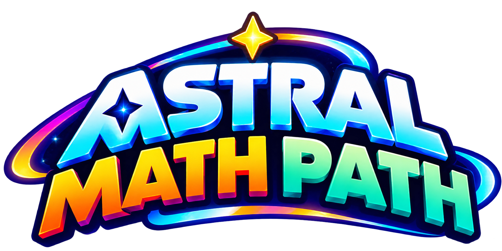
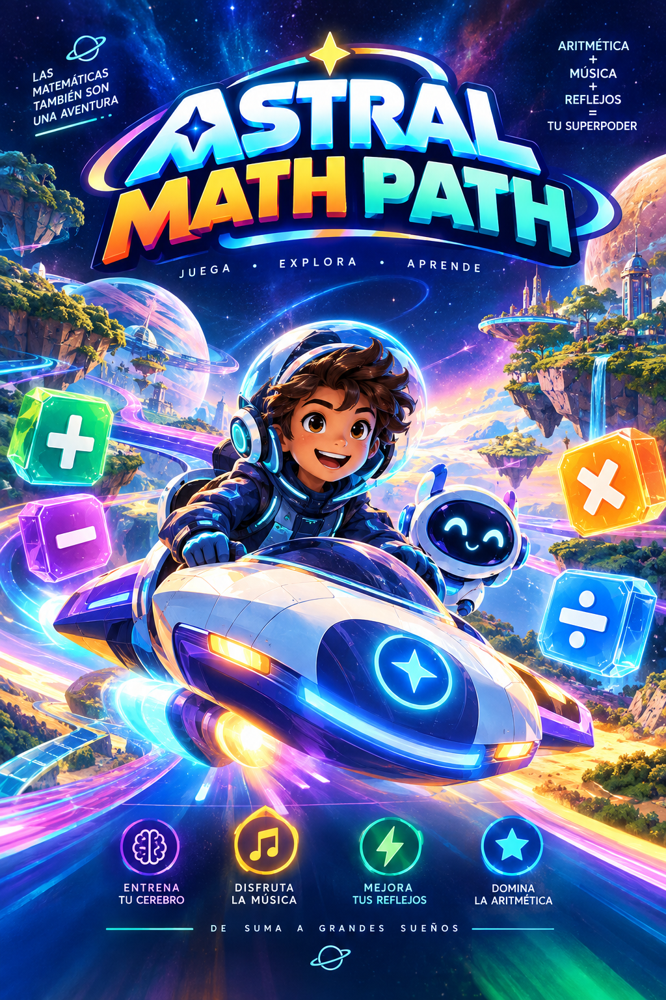

⚡ El Pulso Doble
Aprende Suma, Resta, Multiplicación y División al ritmo del cosmos
| # | INICIALES | PUNTOS | OPERACIÓN / MODO | DIFICULTAD | FECHA |
|---|
Videojuego educativo indie mobile-first de ritmo kinestésico, síntesis sonora Web Audio API en tiempo real y neuroeducación de aritmética completa (Suma, Resta, Multiplicación y División) basada en el modelo del triple código y la automatización de esquemas.
La resta se procesa en el cerebro como la operación inversa de la suma mediante el surco intraparietal (IPS). Al automatizar esquemas intermedios como los complementos a 10 (7 + 3 = 10), se reduce drásticamente la carga de memoria de trabajo (WML) y se acelera el cálculo mental.
Mientras la multiplicación activa rutinas verbales en el giro angular izquierdo (AG), la división actúa como su inversa exacta buscando el cociente sin resto. El ritmo musical a 90–115 BPM sirve de marcapasos cortical que enlaza la corteza auditiva con el surco intraparietal.
El juego utiliza pruebas de bajo riesgo en intervalos rítmicos. La ausencia de alarmas punitivas protege la corteza cingulada anterior (ACC) de la aversión al fracaso, mientras que la desaceleración suave (*tape-stop*) invita a reengancharse con motivación intrínseca.
Has dominado la pista con ritmo impecable.